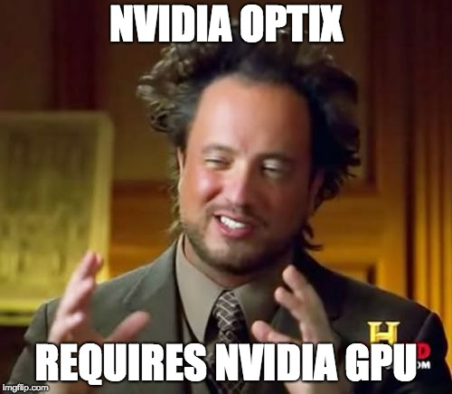

NVIDIA OptiX as A Tool to Accelerate Path Tracing
As a group, we agreed to change our project completely, as we did not realize that using the Nvidia Optix API would require having a Nvidia GPU in our system. One group member did have a GPU, but building the pathtracer project on Windows proved to be a whole project on its own, so we decided to switch to the light field camera project that extends pathtracer, which supports refocusing after rendering.
To achieve multiple shots in a localized area through our pinhole camera model, we needed an efficient way to render multiple images on multiple machines simultaneously, so one of the first goals we accomplished was enabling command line arguments for changing the camera's position and its target location (where it was pointing at). Through some simple code digging we created simple calls from main to application to camera that set the spherical coordinates of the camera and target location, as well as supporting printing out these coordinates in the edit mode of the renderer. We also printed out the X and Y normals to the camera direction from the c2w member of camera to be able to add fractional shifts to our camera position while being on the same XY plane.